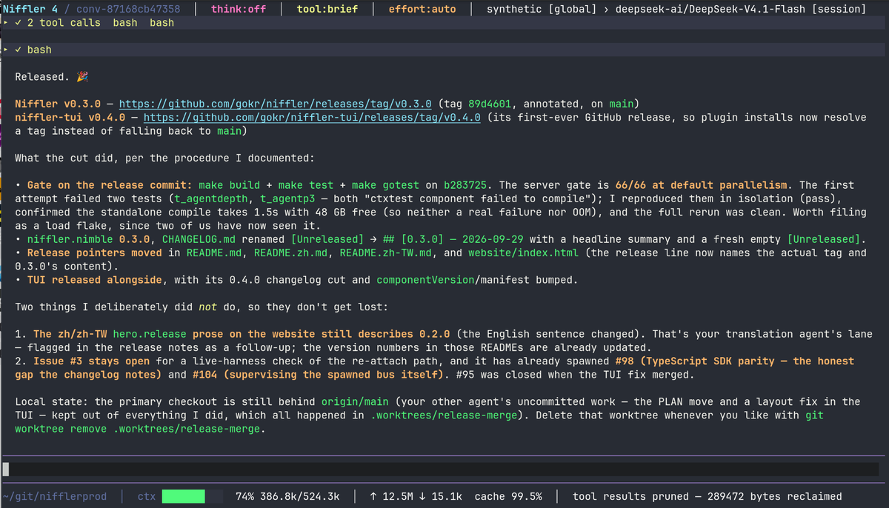

Pi 0.99.2
read · bash · edit · write
3 more built in — grep · find · ls — off by default (+grep to enable)
base prompt≈0.68k
base prompt + tools≈1.4k
A self-extending agent harness
Niffler is built from small Unix-style processes — every capability is a component on one NATS wire — so the agent can write, compile and spawn its own tools mid-conversation: the harness extends itself while you talk to it. Niffler is as simple and efficient to drive as the leanest coding agents — cache-stable prompts, a tiny toolset, measured low token use. Sub-agents, background processes, a permission gate, MCP, LSP? In the box as well.
$ curl -fsSL https://raw.githubusercontent.com/gokr/niffler/main/scripts/bootstrap.sh | bash
GitHub ↗
v0.3.0 — First stable and complete release

01 Fast & cache-effective
The request prefix is tiny and stays byte-stable for the
conversation's lifetime: a very small base prompt and a deliberately
small frozen direct toolset, so provider caches stay hot turn after
turn. Everything else is progressive discovery — one
discover/invoke away, entering as history
instead of prompt bloat. Fewer tokens per turn, quicker round trips —
and the numbers are measured in bench/ against pi,
opencode and claudecode, not asserted.
read · bash · edit · write
3 more built in — grep · find · ls — off by default (+grep to enable)
base prompt≈0.68k
base prompt + tools≈1.4k
discover · invoke · bash · read · write · edit · grep
the whole catalog (~25 components) sits behind discover / invoke
base prompt≈0.36k
base prompt + tools≈2.25k
23 tools — Agent · Bash · CronCreate · CronDelete · CronList · DesignSync · Edit · EnterWorktree · ExitWorktree · ListAgents · Monitor · NotebookEdit · PushNotification · Read · ReportFindings · ScheduleWakeup · SendMessage · Skill · TaskStop · WebFetch · WebSearch · Workflow · Write
base prompt≈1.5k
base prompt + tools≈18k
25 tools — bash · create_goal · edit · exit_plan_mode · get_goal · glob · grep · interrupt_agent · job_kill · job_list · job_output · list_agents · read · read_image · run_code · send_message · skill · subagent · subagent_fork · todo_write · update_goal · web_fetch · web_search · workflow · write
out of the box — every base-backed profile (tui · web · headless)
base prompt≈6.5k
base prompt + tools≈11.7k
bash · edit · glob · grep · read · skill · task · todowrite · webfetch · write
captured from the v1.18.32 wire — v2's docs list a slightly different set (adds apply_patch · question · websearch)
base prompt≈10.7k
base prompt + tools≈16k
≈ k tokens (chars/4) from the exact first-request bytes each harness sends into an empty workspace — captured from live wire requests, Oct 2026. User content excluded (Pi lists your installed skills in its prompt by default, Niffler adds the repo's AGENTS.md chain, Claude Code the CLAUDE.md) — all five captured the same way.
02 Interesting features, relatively rare
None of the following is exclusive to Niffler. But the lean harnesses make you give most of it up, and the big ones hide it behind their UI. Here it is all in one small box:
Delegate and walk away — a background child job runs, and when it settles it wakes your conversation with the result. Steer, continue or fork it later.
Servers, watchers and builds run under the harness: start, poll, kill. No second terminal, no tmux discipline.
A tool can ask first. You answer y/N per call —
sub-agents included: their gated calls route to you, their budgets
are hard-wired. With no human reachable, the call is denied. Fail
closed, never silently allowed.
The agent writes a source file, compiles it, spawns it as a process and calls the new tool — mid-conversation, in any language. Community packages install the same way, always built from source.
fabric compiles a small guest program the agent
writes: typed wrappers over pinned tool schemas turn a dozen tool
calls into one native loop — effect-aware batching, budgets,
approvals by content digest.
Context pressure walks a visible ladder — byte-exact prune, then a checkpointed projection compactor (a replaceable seam), then trim as a last resort. Nothing degrades silently, a trim is durable, and everything dropped stays recallable.
Each conversation gets its own session runner, so conversations run
truly in parallel and one dead runner loses only its in-flight turn.
An advisory peer (expert) can watch a session and
advise — turn-bound, never steering by itself.
Components are plain processes: Nim, Go, TypeScript — or a shell script with no SDK at all. The language is a preference.
03 Everything you take for granted
None of this is exotic — you expect it in a serious harness. Some minimal ones make you give it up. Niffler ships all of it:
Add a backend with one call and hop with /model and
/effort — no config files to hand-edit. OpenAI-compatible,
Anthropic and Codex lanes, or log in with your ChatGPT/Claude
subscription over OAuth. Pins are per-conversation.
Register any MCP server once (stdio, http or sse): a supervised bridge process per server announces its tools and prompts as ordinary catalog tools — same discovery, same approval gate, same call path.
Diagnostics, definitions, references, hover over real language
servers: Go, Nim, TypeScript/JavaScript, Python, Rust, C/C++, Bash,
Java, PHP, Ruby, C# ship configured. Yours missing? One entry in
servers.json — the agent can add it itself.
Code, files & the web
Conversations & context
context_recall/export the exact provider request, prompt_preview, per-role counts, /compact nowTrust & safety
Ecosystem & extension
04 Clients, not containers
Niffler runs headless as a shared local service: the agent, its tools, background jobs and history live in the instance — not in a window. Clients are thin attachers over the bus; several can share one running instance at once. A client boots the harness on demand, an autostarted core turns itself off when the last client leaves — and closing your terminal mid-task loses nothing: background jobs keep running and wake the conversation when they settle.
nats subgokr/niffler-ui) — same wire, its own repoService mode runs with no terminal at all
(niffler < /dev/null) — and niffler in a
terminal is an admin shell (status, catalog, sessions), not a chat.
05 Unix-style architecture
Every capability is a separate process that does one thing —
its own lifecycle, its own failures, isolated from the agent's mind. One
wire connects them all: JSON envelopes over NATS. So the agent can write,
compile and spawn a new tool mid-conversation, and teardown is
just exit(). The OS is the disposer.
the agent extends itself, in any language, while you talk to it
{
"v": 1,
"id": "1760825…-4242-1",
"kind": "call",
"tool": "bash",
"args": { "command": "uname -a" },
"caller": "cli"
}
Calls land on svc.<component>.call (core serves
svc.core.call), events fan out on ev.* —
four kinds: call · result ·
event · error. That is the whole bus
contract.
The codec is ~77 lines of pure std/json, mirrored 1:1
by the Nim, Go and TypeScript SDKs — spec:
docs/WIRE.md ·
rationale:
research/REBOOT.md
06 Sources of inspiration
Niffler is meant to be easily extended — a trait it shares with Pi, its biggest influence. It wears its sources on its sleeve. What we took, and from where:
Token efficiency, a small initial toolset and self-aware extendability — a harness meant to be easily extended. Niffler is built the same way and pushes a variant architecture: loosely coupled components, replaceable at runtime.
The more advanced component model, and the serious techniques most harnesses never attempt: projection-based compaction and the sub-agent model.
Simplicity of use — the standing reminder that a powerful harness can still be obvious to drive.
The strict cache regime, working especially well for models with cheap cached tokens like DeepSeek — where cache hits are the economics of the turn.
07 Install
curl -fsSL https://raw.githubusercontent.com/gokr/niffler/main/scripts/bootstrap.sh | bash
# asks before creating ~/niffler — or pick a location: | bash -s -- /your/dir
# or manually, from a clone:
git clone https://github.com/gokr/niffler.git && cd niffler
make setup && make build
cp .env.example .env # add a model API key
make install-tui # the terminal client (a plugin)
niffler-tui # boots the harness on demandNiffler is built from source and distributed that way —
there are no prebuilt binaries. The one-line installer brings in
everything missing (git, make, Go, Node.js, the Nim toolchain and
nimble packages); building by hand, make doctor reports
what is missing. The bus is bundled — core spawns its own nats-server.
The desktop UI is an experimental spin-off — install it like any
package: cli install gokr/niffler-ui. Full story in the
manual ↗.